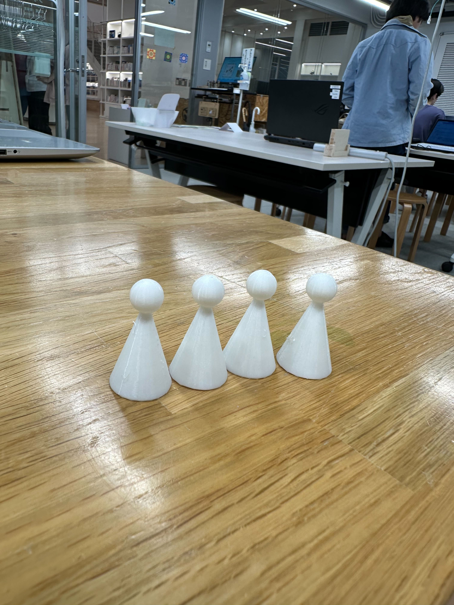

準備活動
6月14日: ワークショップの進行企画書のエクセルとパワーポイントの提出依頼。SharePointにアクセスできないため、Slackに直接ファイルを添付するよう指示:citation[oaicite:2]{index=2}。
6月17日: ゼミ生で6/21トライアルWSに向けMTG。（せっかくWS設計に関わらせてもらえるのだから、オリジナリティ求める）
【WSの内容】
- すごろく形式のゲーム型
- 4人1組でチーム
- 5グループで対戦する
- 保護者にコマの役をやっていただく（机の上ではなく、会場全体をすごろくとした時の場合）
- コマにMESHを使ったアクションを書いておく
- みんなに遊んでもらう（最後の発表会はない）
- チュートリアルでMESHの使い方を学ぶ（遊びながら学ぶ！）
- コマを進めるごとにMESHを使ったアクションの難易度が上がる
- サイコロは自分たちで作って、1.2.3.1.2.3の6面
- 人生ゲーム式で小学校入学から大学卒業までのアクションを作る
- ex)嬉しいことあったら◯マス進む
- アクションをクリアしたグループごとに、どんどんマスを進める
【個人でやってくること】
- コマを作る（野木、百瀬）
- サイコロを作る（北川）
- マス目が書いてあるボードを作る（網倉）
- パワポとエクセルを変える（全員）
- 警告:明日の17時までにslack送る！警告
- 1人10個のアクションを考える（小学生、中学生、高校生、大学生で3:3:3:1とか、2:2:2:4くらいで考える、大学になるにつれて難易度を上げる→ex)ブロックを3つ組み合わせたもの）
- スタート、ゴールのマスを用意する
- ex)小学校に入学した→センサーで笑い声を入れよう！簡単なもので！
- チュートリアルを入れる
- 最初の方にアイスブレイクができるマスを入れる
6月18日: すごろくの内容を作成し、プレワークショップの進行方法を共有。基本ルールとして、マス目のアクション完了をスタッフが判断することを決定。
6月18日: すごろくマスデータを作成中の問題として、悪天候の影響でラボが早く閉まるため、データ出力が遅れる旨を共有。協力者がデータ加工を手伝うことを申し出る。すごろく駒出力完了

6月19日: トライアルワークショップの進行方法について事前に送付。20分で実施することを再確認し、進行のイメージを添付資料で説明。
6月21日:中間トライアルWS日。
6月22日: 各グループリーダーmesh活用→ @入野果穗 基礎・アイスブレイク→ @三浦ジェフェルソン 天才→ @鳴海明(タクシー会社)で決定。
6月25日: Takehiro Hagiwara氏が今週末のワークショップについて、子ども役と保護者役が2人1組で進めることを連絡。
6月26日: 網倉光生氏が最終トライアルWSのファシリMTGを6/27 22:30に行うことを提案。
6月27日: 最終トライアルWSのファシリMTGを実施。
6月28日: 村田華蓮氏がスライドの最新版をパワポで共有するよう依頼。Takehiro Hagiwara氏がスライドのフィードバックを共有。
6月29日: U074XP3JVQR氏が6/28のトライアル記録を2人分まとめたものを共有。
7月4日: 村田華蓮氏が7/8までに決めるべきことと本番会場での禁止事項をリマインド。
7月5日: 村田華蓮氏が30分後にZoomミーティングを開始する案内。

.png)